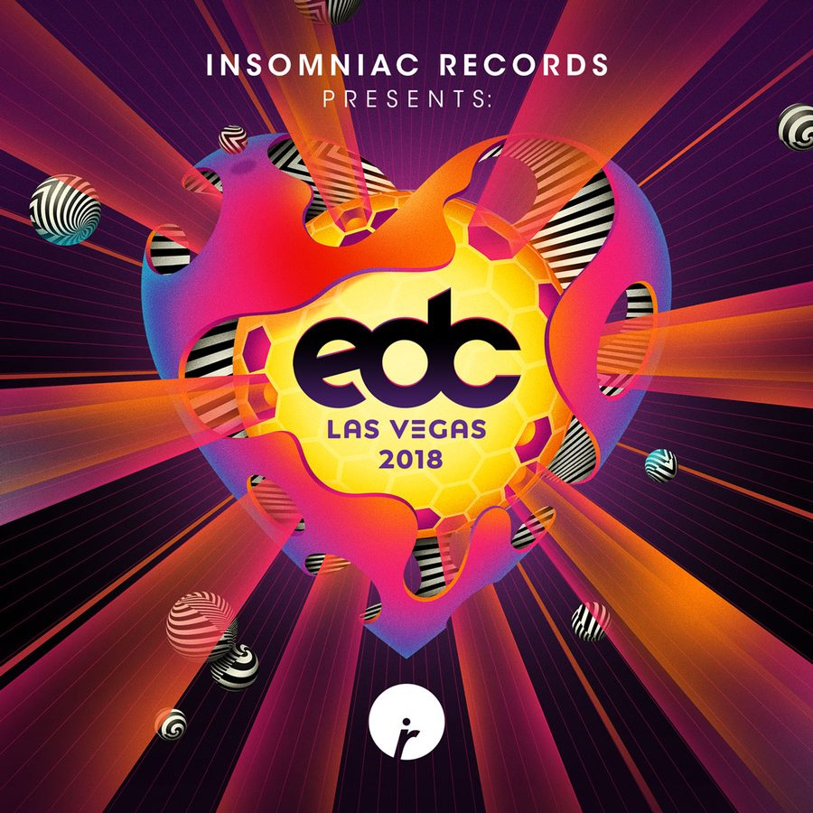

Insomniac’s ‘EDC Las Vegas 2018 Compilation’ Is as Massive as the Festival Itself


With GA tickets to EDC Las Vegas selling out last week and the three-day bonanza literally just a single, short week away, to say that excitement levels are high is the understatement of the EDM century. So, to help make the final stretch of waiting just that little bit more bearable, we’ve unleashed the official EDC Las Vegas 2018 Compilation, which features more than 30 tracks tracks from established veterans and ascending newcomers alike.
The big-ticket highlights from the comp include a brand-new track from none other than Kaskade, fittingly titled “Fun,” while Tiësto’s latest collaboration alongside Mesto, “Coming Home,” is also included for good measure. Throw in Chris Lake’s recent bass-heavy house slammer “Lose My Mind,” and you’ve got star power galore.
However, it’ll be the wide selection of ascending Insomniac stars that will be the real drawcard of the album for many, including a larger-than-usual assortment of collaborations. You’ve got SLANDER teaming with Wavedash, Solardo producing with Wave, Wongo and Jace Mek pairing up to fashion a main-room banger, and many more besides.
Beyond these EDC-inspired pairings, exclusives aplenty can be found on the EDC Las Vegas 2018 Compilation. We reached out to some of the artists to find out more about the new music, as well as how they’re feeling as their stint at the Speedway draws closer.
“EDC is a very special time for us,” say SLANDER, who will be celebrating their 10th year as attendees and their second time playing kineticFIELD. “We are also bringing an album’s worth of unreleased SLANDER music that we will be premiering for the first time at EDC!”
For Dr. Fresch, who contributes his new track “Fire” to the compilation, next weekend at EDC represents the culmination of what’s been an incredible journey for this Insomniac regular.
“Insomniac has played a giant role in my growth from the beginning,” he says. “Winning Discovery Project catapulted me toward a career as a touring act, placing me alongside the likes of artists that I would not just collaborate and perform with, but would ultimately become best friends with, as well. I am so stoked to return Under the Electric Sky on the Insomniac Records Stage. It’s gonna be epic!”
Sinden says he’s dying to get back to Vegas this year. “It’s such a massive honor to perform. Ask any DJ, and they will tell you: Nothing comes close to the EDC experience. I made a new track especially for the comp, called ‘Kick In.’ It’s one of the freakiest-sounding tracks I’ve made in a minute, and I’m really looking forward to seeing the reaction when I can drop it for all the raving crew.”
Meanwhile, Aussie duo Carmada are making their EDC debut this year and have contributed a fresh track to mark the occasion. “We’re super excited to pop our EDC cherry, and it’s made even sweeter with our latest single, ‘Ready for It,’ that’s included in the compilation!”
The official EDC Las Vegas 2018 Compilation is available here.
EDC Las Vegas, which takes place Friday, May 18, through Sunday, May 20, at Las Vegas Motor Speedway. A limited number of VIP passes, shuttle passes, and Camp EDC RV spots remain for EDC Las Vegas 2018. Grab your passes now!
Follow Insomniac Records on Facebook | Twitter | SoundCloud | Instagram
Follow EDC Las Vegas on Facebook | Twitter | Instagram